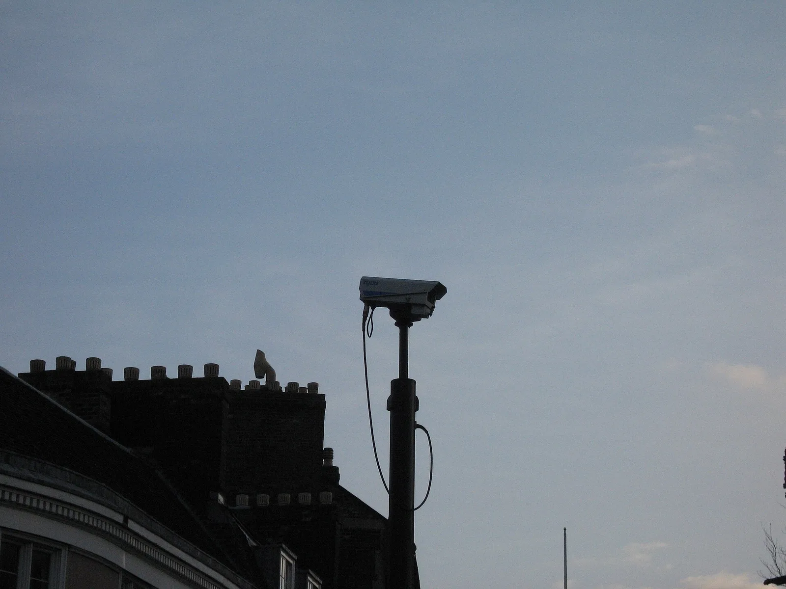

▲ 측면 충돌로 파손된 차량(자료사진). 뺑소니 사고에서는 차체에 남은 흔적 자체가 중요한 증거가 된다 ⓒ Garitzko, Wikimedia Commons (Public Domain)
주차된 차가 긁히고 상대는 사라진 뒤, 혹은 주행 중 접촉 사고를 당했는데 상대 차량이 그대로 도주한 뒤. 블랙박스가 없거나 각도가 어긋나 있으면 막막해지기 쉽다. 하지만 현장에서 몇 가지만 놓치지 않으면 가해 차량을 특정할 실마리는 의외로 여러 곳에 남아있다.
1. 사고 직후 가장 먼저 해야 할 일
뺑소니를 당했다는 것을 인지한 순간, 가장 먼저 할 일은 현장을 함부로 정리하지 않고 112에 신고하는 것이다. 상대 차량이 이미 사라졌더라도 신고 시점 자체가 수사의 출발점이 된다. 부상이 있다면 119도 함께 불러야 하며, 가능하면 사고 현장에 그대로 머물러 경찰의 현장 조사를 받는 것이 좋다. 부득이 자리를 옮겨야 한다면 차량 위치와 파손 부위를 사진으로 먼저 남긴 뒤 이동하자.

▲ 블랙박스가 있다면 사고 직후 가장 먼저 해야 할 일은 해당 구간 영상을 별도 파일로 백업해두는 것이다(자료화면) ⓒ 카프리즘
2. 블랙박스가 없거나 각도가 안 맞을 때 증거 확보법

▲ 거리에 설치된 CCTV(자료사진). 내 블랙박스가 없어도 주변 CCTV가 사고 순간을 담았을 수 있다 ⓒ Hans Wolff, Wikimedia Commons (Public Domain)
블랙박스가 없거나 사고 방향과 각도가 맞지 않아 아무것도 찍히지 않았더라도, 낙담하기는 이르다. 다음 세 가지를 현장에서 확보해두면 가해 차량을 특정할 가능성이 남는다.
- 목격자 확보: 주변에 있던 사람에게 연락처를 받아두자. 목격자 진술은 CCTV가 없는 구간에서 특히 결정적인 증거가 된다.
- 주변 CCTV·상가 카메라 위치 파악: 사고 지점 반경에 있는 편의점, 상가, 아파트 단지, 신호등 교통 CCTV의 위치를 스마트폰으로 사진 찍어두자. 경찰이 영상을 확보할 때 위치 정보를 제공하면 수사 속도가 빨라진다. CCTV 영상은 보관 기간(통상 수일~수주)이 지나면 삭제되므로 최대한 빨리 신고해야 한다.
- 차량 파편·도색 흔적 채증: 현장에 떨어진 사이드미러 조각, 번호판 파편, 플라스틱 범퍼 조각 등은 가해 차량의 차종·색상을 특정하는 데 활용된다. 함부로 치우지 말고 사진으로 여러 각도에서 촬영한 뒤, 경찰 도착 전까지 위치를 그대로 보존하자. 내 차에 묻은 상대 차량의 도색(페인트) 흔적도 색상과 부위를 근접 촬영해두면 국립과학수사연구원 감정에 활용될 수 있다.
| 증거 유형 | 확보 방법 | 비고 |
|---|---|---|
| 목격자 | 연락처·인상착의 메모 | 진술서 작성 가능 여부 확인 |
| CCTV | 주변 카메라 위치 촬영·경찰에 전달 | 보관 기간 경과 전 신고 필수 |
| 차량 파편 | 위치 보존 후 사진 촬영 | 차종·색상 특정 단서 |
| 도색 흔적 | 근접 촬영(색상·부위) | 국과수 감정 자료로 활용 |
| 블랙박스(있는 경우) | 영상 즉시 백업 | 메모리 덮어쓰기 전에 저장 |
3. 가해자를 못 찾았다면 — 정부보장사업

▲ 경찰은 도주 차량 수사를, 정부보장사업은 가해자를 특정하지 못한 피해자의 보상을 각각 담당한다 ⓒ Wikimedia Commons
수사에도 불구하고 가해 차량을 끝내 특정하지 못하는 경우가 있다. 이럴 때를 대비해 마련된 제도가 「자동차손해배상 보장법」 제30조에 근거한 자동차손해배상 보장사업(정부보장사업)이다. 뺑소니(보유불명차) 또는 무보험 차량 사고로 피해를 입었는데 가해자로부터 배상을 받을 수 없을 때, 국토교통부가 위탁한 손해보험협회를 통해 정부가 최소한의 치료비 등을 보상해주는 사회보장제도로 1978년부터 시행되고 있다.
신청 절차는 ①사고 발생 → ②경찰서 신고(교통사고 사실확인원 발급) → ③손해보험협회로 보상 신청 순이다. 필요 서류는 교통사고 증명서류(경찰서 발급), 진단서, 치료비 영수증(또는 명세서), 기타 손해를 입증하는 서류 등이며, 신청 기한은 손해가 발생한 사실을 안 날로부터 3년 이내다. 상담은 통합안내 콜센터(1544-0049)로 문의하면 손해보험협회로 자동 연결된다.
손해보험협회 정부보장사업 안내 바로가기4. 뺑소니 특정 시 처벌 수위
가해자가 특정되면 「특정범죄 가중처벌 등에 관한 법률」 제5조의3(도주차량 운전자의 가중처벌)에 따라 처벌받는다. 도로교통법상 사고 운전자에게는 구호조치 의무가 있는데, 피해자의 부상·사망을 인식하고도 이를 이행하지 않고 현장을 이탈하면 도주로 간주된다.
- 도주치상(피해자 상해): 1년 이상의 징역 또는 500만원 이상 3천만원 이하의 벌금
- 도주치사(피해자 사망): 무기 또는 5년 이상의 징역
피해자를 단순히 구호하지 않고 떠난 것을 넘어, 사고 후 피해자를 옮기거나 인적이 드문 곳에 유기하고 도주한 경우(제5조의3 제2항)는 형량이 한층 무거워진다. 유기 후 도주치상은 3년 이상의 유기징역, 유기 후 도주치사는 사형·무기 또는 5년 이상의 징역까지 선고될 수 있다.
단순 물피 도주(사람이 다치지 않은 대물 사고 후 도주)는 도로교통법상 별도로 처벌되며, 인적 피해가 있는 도주보다는 형량이 낮지만 역시 형사처벌 대상이다.
5. 뺑소니 대응 체크리스트
체크 포인트
- 사고 인지 즉시 112 신고부터 하자. 현장을 함부로 정리하지 말자.
- 목격자·CCTV 위치·파편·도색 흔적, 네 가지 증거를 우선 확보하자.
- 가해자를 못 찾았다면 정부보장사업을 3년 이내에 신청하자.
- 블랙박스가 있다면 사고 직후 영상부터 백업해두자.
6. 정리
체크포인트
- 블랙박스가 없어도 목격자·CCTV·파편·도색 흔적으로 가해 차량을 특정할 여지가 남는다.
- 가해자를 특정 못 해도 정부보장사업으로 최소한의 보상을 받을 수 있다.
- 도주치상은 1년 이상 징역, 도주치사는 무기 또는 5년 이상 징역이다.
- 정부보장사업 신청 기한은 손해를 안 날로부터 3년 이내다.